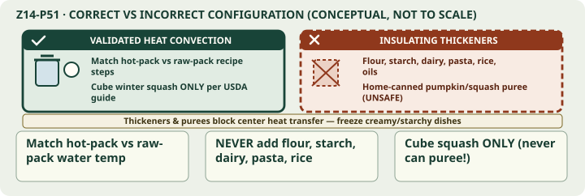

Z14-P51 · Food production and preservation · New manuscript
Match raw-pack vs hot-pack prep and exclude unauthorized thickeners or fats
Preserve validated heat-penetration physics inside every jar so center temperatures reach lethal target zones on schedule.
When it applies · Preparing fruits, vegetables, soups, and meats before loading jars for canning.
Equipment · Tested USDA/NCHFP recipe specifying raw-pack or hot-pack method and matching kettle/water-bath temperature.

Actions
- Follow the recipe's exact pack style: hot-pack (pre-cooking food in liquid before packing hot into hot jars) drives out trapped air, yields higher pack weight, reduces floating fruit, and requires matching hot canner water (~180°F), while raw-pack uses cooler initial canner water (~140°F) to prevent thermal glass shock.[P06, P09]
- NEVER add unauthorized thickeners (flour, cornstarch, roux, heavy cream, milk, cheese, noodles, rice, barley, or extra cooking oils/fats) to home-canned soups, stews, or sauces—thickeners stop internal liquid convection currents and insulate the jar center from sterilizing heat.[P06, P07]
- Puree ONLY foods with an explicit USDA pureed protocol (for example, USDA tests CUBED winter squash and pumpkin ONLY—home canning pureed/mashed pumpkin or winter squash is UNSAFE because dense puree heats too slowly and unpredictably!).[P06, P07]
Failure recognition · Home-canning thick creamy potato-and-pasta soup or mashed pumpkin puree because "it looks like store-bought canned soup."[P06, P07]
Verify · Confirm pack style (hot vs raw) matches recipe, zero unapproved thickeners/dairy/pasta/rice added, and winter squash is cubed—never pureed.[P06, P07]
Stop or change course · Recipes calling for flour, dairy, pasta, rice, or home-canned pumpkin puree must be frozen instead of canned.[P06, P12]
Evidence and editorial notes
- P06 · USDA / NCHFP · USDA Complete Guide to Home Canning (2015 / current NCHFP edition)
- Section: Complete Guide to Home Canning > Principle of Tested Protocols · Conditions: All residential home canning (boiling-water and pressure canning)
Support: Treat every USDA/NCHFP tested canning recipe as a single indivisible system: food pH, piece size, liquid viscosity, jar size, headspace, processing method, pressure/temperature, time, and altitude adjustment must all match the tested protocol.
Limitations: Adding extra starch, flour, oil, fats, or altering acid/low-acid ratios slows heat penetration and can cause lethal botulism. · Conflicting evidence: Directly prohibits online untested shortcuts and heirloom recipe alterations.
Editorial note: Foundational system-integrity rule across all Z14 canning cards. · Specialist reviewer: Food preservation process authority and Extension
Primary source · checked 2026-11-24 - P07 · USDA / NCHFP · How to Use Boiling Water and Pressure Canners (Current web edition)
- Section: Using Pressure Canners; venting; operating at elevation; pressure interruption · Conditions: Validated USDA/NCHFP low-acid process, listed equipment, actual elevation
Support: Vent continuously for ten minutes before pressurizing. Select the tested product, gauge, altitude, pressure and time combination. If pressure drops below target, restore it and restart the full process time.
Limitations: No generic pressure schedule or guarantee. Confirm dial-gauge accuracy according to the reference and obtain Extension guidance on deviations. · Conflicting evidence: See A02 claim audit for boundaries.
Editorial note: Core low-acid botulism-prevention boundary in Z14. · Specialist reviewer: Food microbiology and Extension preservation specialist
Primary source · checked 2026-11-25 - P09 · NCHFP · Using Pressure Canners (current web edition)
- Section: Headspace, Jar Preparation, Two-Piece Lids, and Cooling Seals · Conditions: Mason-type canning jars with two-piece metal lids and screw bands
Support: Use true canning jars (never commercial mayonnaise jars), leave exact recipe headspace, remove trapped air bubbles, wipe jar rims clean, tighten bands fingertip-tight only, and let jars cool undisturbed 12–24 hours before checking vacuum seals and removing rings for storage.
Limitations: Inverting jars, tightening bands after cooling, or re-using flat sealing lids causes seal failure and silent spoilage. · Conflicting evidence: None; directly targets top home-canning mechanical failures.
Editorial note: Grounds jar-seal mechanics and inspection cards in Z14. · Specialist reviewer: Food preservation specialist
Primary source · checked 2026-11-24 - P12 · NCHFP · Freezing Foods Safely (current web edition)
- Section: Freezing Foods > Blanching, Packaging, 0°F Storage, and Thawing · Conditions: Household freezers maintaining 0°F (-18°C) or lower
Support: Blanch most vegetables per tested times to inactivate quality-degrading enzymes, chill promptly, package in moisture-vapor-resistant freezer wrap/containers leaving liquid expansion headspace, freeze at 0°F or below, and thaw safely in the refrigerator (never on the counter).
Limitations: Freezing halts microbial growth but does not kill all pathogens; thawed foods require prompt safe cooking/handling. · Conflicting evidence: None; connects freezing quality control with Z15 outage loss decisions.
Editorial note: Core freezing and safe thawing evidence in Z14. · Specialist reviewer: Food safety and Extension preservation
Primary source · checked 2026-11-24
Source lineage · USDA Complete Guide to Home Canning; new manuscript · Classification · New manuscript.